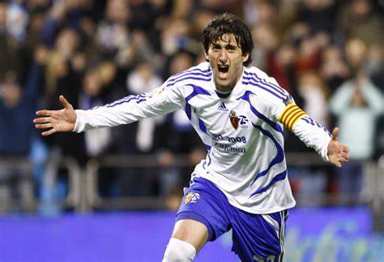

Ya desde el inicio de su carrera se destacó por el freno y la cabeza levantada. Luego, le sumó el olfato goleador que fue mejorando con los años, sobre todo en Europa, donde se destaca.
Nació el 12 de junio de 1979 en Bernal, Buenos Aires. En Racing, en dos etapas, jugó 222 partidos (¿qué otro número le cabe al histórico 22?) y anotó 59 goles por toda competición.
Debutó el 11 de diciembre de 1999, pasó los momentos de quiebra como un juvenil, fue parte activa del equipo que escapó a la promoción en la primera parte de 2001 y fundamental en el que fue campeón en la segunda parte de ese año.
En enero de 2004 pasó al Genoa de Italia, en el que se consagró como ídolo al ser el goleador del equipo que ganó la Serie B. Sin embargo, problemas judiciales en el club le impidieron jugar en la Primera.
Entonces, en el inicio de la temporada 2005-06 fue al Zaragoza de España, donde mostró toda su calidad. Allí, en 125 partidos ya anotó 61 goles y se recuerdan hazañas como los cuatro que le hizo al Real Madrid en la Copa del Rey de 2006.
Justamente, el Real quiso contar con sus servicios, pero el Zaragoza mejoró su contrato, renovó por cuatro años y puso una clausula de rescisión de 100 millones de euros a quien lo quiera comprar en el medio. Sin embargo, para la campaña 2008-09 regresó a Genoa, pero fue breve, porque semejante talento demandaba otro escenario: el Inter, top de Italia, lo tuvo entre 2009 y 2014.Mal no le fue: seis veltas olímpicas (tres ligas, dos veces la Copa Italia y una la Supercopa en el orden local y, en el internacional, la Champions League y el Mundial de Clubes 2010, con los dos goles en la definición continental ante Bayern Munich y su distinción como Mejor Delantero de Europa en ese año). El balance le dio 171 encuentros y 75 tantos: impecable.
Jugó el Mundial 2010, en Sudáfrica, y con la otra camiseta albiiceleste nacional acumuló 25 juegos (incluyen, también, Eliminatorias y Copa América) y cuatro goles. ¿Algo más? Alteza, Príncipe, de estirpe real... Volvió a Racing a mitad de 2014 y, seis meses después, era la referencia clave para la consagración en el Torneo de Primera.
Su carrera se extendió hasta el 21 de mayo de 2016 y se fue como quiso y cuando quiso, rodeado del amor de su su gente, la familia, la propia y la de Racing...
| Club | Partidos | Goles | Promedio |
|---|---|---|---|
| Racing Club | 222 | 59 | 0.26 |
| Genoa | 98 | 60 | 0.61 |
| Zaragoza | 125 | 61 | 0.48 |
| Inter | 171 | 75 | 0.44 |
| TOTAL | 616 | 255 | 0.41 |